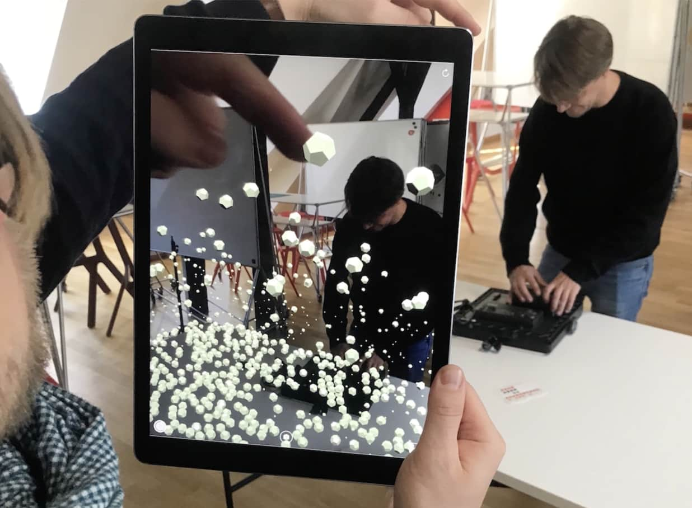

Concept, Interaction design,
Unity development
Cooperation
Till Nagel
Christoph Huber
Sophie Humbert
Client
HDILab, HS Mannheim

Temporal Directionality: Rendering temporal data in embedded visualizations challenges the conventional representation of time. It accounts for cultural differences in perceiving time and investigates how the observer's position can alter perceived flow directions in visualizations.
Temporal Situatedness: Refers to the alignment of the data's temporal context with the actual observation time, enhancing relevance and immediacy. It differentiates between live, historic, and predictive data, emphasizing temporal situatedness for its immediate contextual alignment in urban environments.
Spatial Proportions: This aspect combines abstract data visualization methods with real-world scales, such as adapting a visualization's scale to match the dimension of a building. This integration helps link data more intuitively to physical urban elements, enriching user interaction and comprehension.
Visualization Idioms: Focuses on selecting and refining visualization techniques suitable for embedding data into urban contexts. This includes choosing between discrete or continuous temporal scales, deciding the cardinality of the viewpoint, and effectively using spatial positioning to represent different data attributes like traffic volume.
We demonstrate the feasibility of our designs in real-world settings through a mobile application utilizing location-based augmented reality. In our demonstrator, we chose street-level traffic such as cars, motorcycles, and trucks, due to their prevalence in central urban locations and their proximity to pedestrians. We used computer-vision based tracking systems installed at locations that track and classify individual vehicles into traffic categories from our Smart City project in Mannheim.
